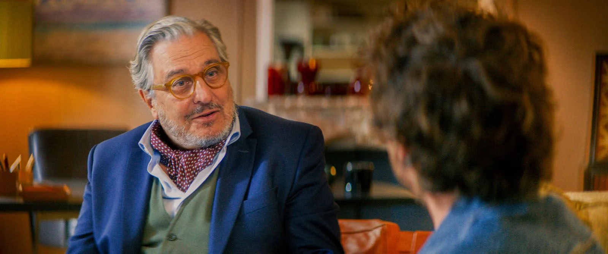
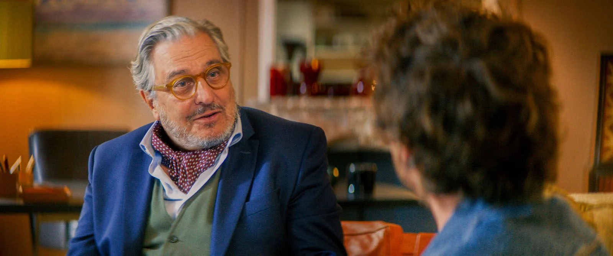

Dans une époque où les thérapies et le bien-être mental occupent une place grandissante dans nos sociétés, le film Jamais sans mon psy arrive comme une bouffée d'air frais. Réalisé par Arnaud Lemort et porté par un casting impressionnant avec Christian Clavier notament, cette comédie douce-amère explore avec humour et émotion notre rapport à la santé mentale.
Le Dr Béranger est un homme heureux. Sa vie serait parfaite s’il n’y avait pas ce patient très angoissé et extrêmement collant : Damien Leroy. Pour enfin s’en débarrasser, il lui fait croire que le seul moyen de guérir est de trouver le grand amour. Mais alors qu’il s’apprête à fêter ses 30 ans de mariage, sa fille lui annonce qu’elle a enfin trouvé l’homme de sa vie qui n’est autre que… Damien. La fête va virer au cauchemar.
Outre Baptiste Lecaplain et Jean-François Cayrey, le film réunit des seconds rôles savoureux qui viennent enrichir l’univers du Dr Béranger. On retrouve notamment Claire Chust en Alice et Cristiana Réali en tant que Paloma Béranger, la femme du Dr Bérenger. Chaque personnage, avec ses excentricités et ses failles, apporte une profondeur à l’histoire tout en la rendant hilarante.
 

Bien que Jamais sans mon psy soit avant tout une comédie, le film aborde des thèmes essentiels avec une grande sensibilité. La pression sociale, la quête de soi et les préjugés autour de la thérapie sont autant de sujets qui trouvent leur place dans le scénario. Arnaud Lemort signe une réalisation élégante, alternant légèreté et moments d’émotion, pour livrer une œuvre qui touche autant qu’elle divertit.
Avec son écriture percutante et son regard à la fois critique et tendre sur nos travers modernes, Jamais sans mon psy a toutes les cartes en main pour s’imposer comme un incontournable de cette fin d’année. La presse spécialisée salue déjà son audace, tandis que les spectateurs se ruent en salles pour découvrir cette comédie aussi réconfortante qu’inspirante.
Alors, prêts à rire et à réfléchir ? Rendez-vous dans les salles obscures le 11 décembre pour un moment de pur bonheur cinématographique.